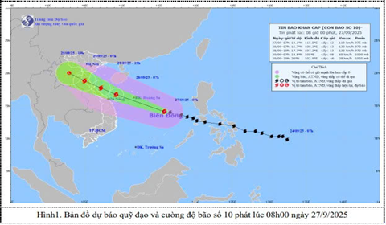

CHÍNH TRỊ
Cường độ bão số 10 mạnh cấp 12, giật cấp 15, chỉ còn cách Đà Nẵng 460km
Hồi 19 giờ tối 27/9, bão số 10 (Bualoi) di chuyển nhanh với tốc độ 30-35km/giờ, cách thành phố Đà Nẵng khoảng 460km về phía đông. Sức gió mạnh nhất vùng gần tâm bão mạnh cấp 12, giật cấp 15. Dự báo, đến 7 giờ sáng mai (28/9), bão có khả năng mạnh thêm, cách Quảng Trị khoảng 200km.
Thứ Bảy, ngày 27/09/2025 - 21:22
Theo Trung tâm Dự báo khí tượng thủy văn quốc gia, hồi 19 giờ ngày 27/9, vị trí tâm bão ở vào khoảng 15,6 độ vĩ bắc; 112,3 độ kinh đông, trên khu vực phía nam đặc khu Hoàng Sa, cách thành phố Đà Nẵng khoảng 460km về phía đông. Sức gió mạnh nhất vùng gần tâm bão mạnh cấp 12 (118-133km/giờ), giật cấp 15. Di chuyển theo hướng tây tây bắc với tốc độ 30-35km/giờ.
Đến 7 giờ sáng 28/9, bão số 10 di chuyển theo hướng tây tây bắc, khoảng 30km/giờ và có khả năng mạnh thêm. Vị trí tâm bão ở vào khoảng 16,9 độ vĩ bắc, 109,3 độ kinh đông, trên vùng biển Quảng Trị-Thành phố Huế, cách Quảng Trị khoảng 200km về phía đông. Sức gió mạnh nhất vùng gần tâm bão mạnh cấp 12-13, giật cấp 16. Rủi ro thiên tai: Cấp 3 tại khu vực bắc và giữa Biển Đông (bao gồm đặc khu Hoàng Sa); vùng biển từ Hà Tĩnh đến Quảng Ngãi.